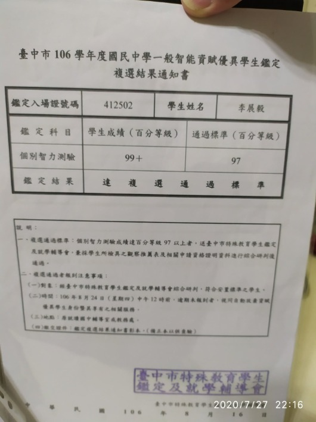
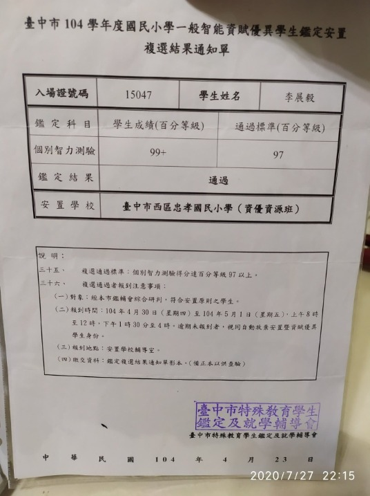
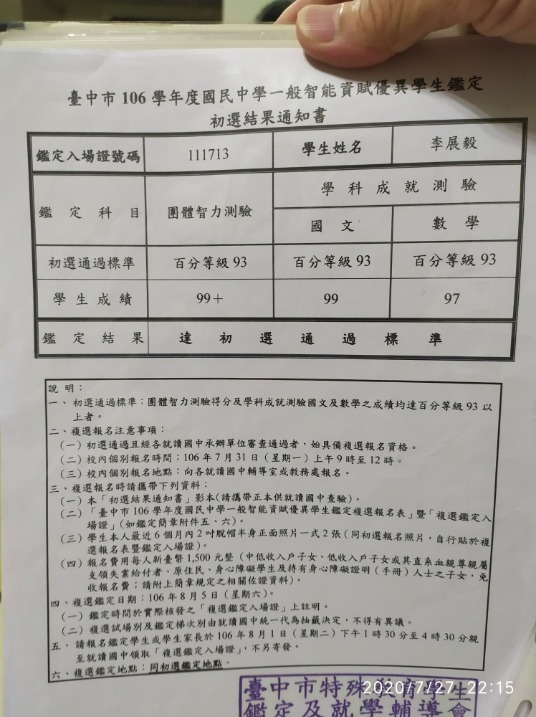

李豐榮先生 高中生AMC10深水區網課心得
FB上大型親子教育社團創辦者感謝FB親子學生i學習家族管理員李豐榮先生的推薦。李先生兒目前高一，因曾經忽略資優數學的學習和數資班擦身而過，但學習永遠不嫌遲，現在開始，為頂大學測、二階做準備，相信一定可以達成目標的！
大家好：我是〈親子學生i學習家族〉的李爸
我不認識宗翰老師但推薦老師的數學教法
過年期間陪同小孩看了5堂宗翰老師團隊錄製的AMC數學,教的真好(我買了8堂,陪同看了5堂)我把宗翰老師的數學團隊推薦給各位夥伴
我把小孩的數學也交由宗翰老師來教
我陪伴小孩長大,也陪伴小孩打過幾場考試戰
國小資優班
國中資優班
中興大學物理資優班(面試)
彰師大數學人才培訓班
台中一中科學班(失敗)
台中一中資優班(打到第二關)
上一則PO文我提及失敗要找原因,並加以改進。
未來學測二階考試對我家小孩很重要,我也一直在找尋老師來教導(數學不能再重蹈覆轍之前的失敗)所以報名宗翰老師給國高中喜愛數學的孩子課程1001共15堂數學課

我相信宗翰老師是老天安排透過星媽您來幫助我的
我一直在尋找數學老師來教導小孩(我相信我家小孩是可以栽培)
很感恩在人、事、時、地都齊全下認識星媽、宗翰老師的團隊
(團報有優惠,目前有2位)
https://www.facebook.com/groups/695697124716309/permalink/751269785825709/
https://www.facebook.com/groups/695697124716309/permalink/758944131724941/


